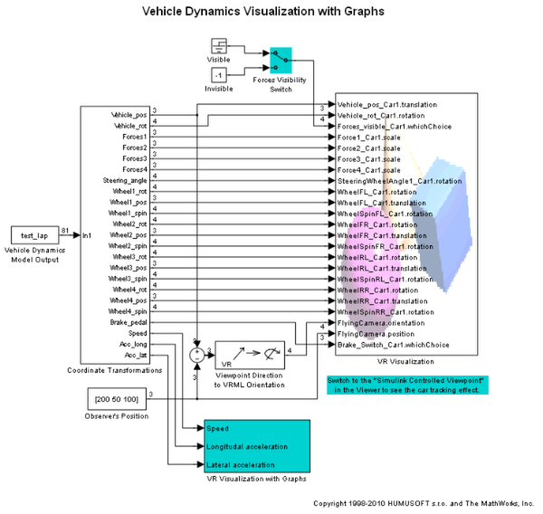
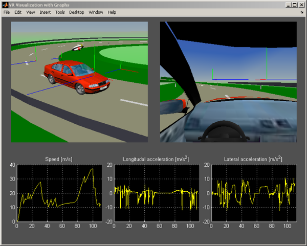

Vehicle Dynamics Visualization with Graphs
This example extends the vr_octavia example and shows how combine virtual reality canvas in one figure with other graphical user interface objects. In this case, three graphs are displayed under the virtual scene and updated in each major simulation time step.
The 'VR Visualization with Graphs' subsystem contains the 'octavia_graphs' S-Function that provides this functionality.
 